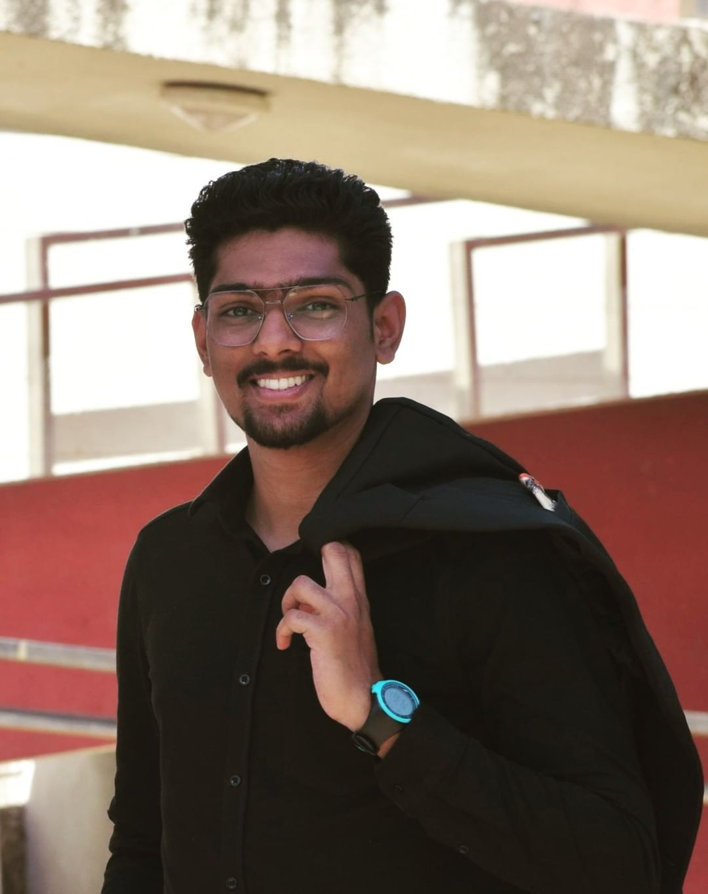

Contact: kedarnathpc2002@gmail.com
LinkedIn: linkedin.com/in/kedarnath-chavan-768a92226/
Github: github.com/kedarnathpc
|  | As an IT engineering student, I find myself immersed in a world of innovation and technology. Each day is a new opportunity to explore the ever-evolving landscape of computers, software, and systems. I am driven by a deep curiosity and passion for understanding how things work and how I can contribute to making them better. My journey as a student has been filled with countless hours of coding, problem-solving, and collaborating with my peers. Whether it's designing algorithms, building software applications, or troubleshooting network issues, I am constantly challenged to think critically and apply my knowledge to real-world scenarios. I spend a significant amount of time in the computer lab, hunched over my laptop, delving into complex programming languages and frameworks. The thrill of solving a difficult coding problem or successfully debugging an error is incredibly rewarding. It fuels my desire to continuously learn and grow in this field. As an IT engineering student, I am always keeping up with the latest industry trends and advancements. I avidly read tech blogs, attend webinars, and participate in coding competitions to stay ahead of the curve. This field is ever-evolving, and I understand the importance of staying up-to-date to remain competitive and contribute meaningfully in the industry. Teamwork and collaboration are vital aspects of my journey as an IT engineering student. Group projects and team assignments allow me to work alongside my classmates, sharing ideas and leveraging our collective strengths. Through these experiences, I have come to appreciate the power of collaboration and the importance of effective communication in achieving successful outcomes. Beyond the technical aspects, I also understand the significance of ethics and responsibility in the IT field. The power and influence of technology are immense, and I strive to be an ethical engineer who considers the broader impact of my work on society. Privacy, security, and accessibility are values that I prioritize in my projects, aiming to develop solutions that not only function effectively but also uphold ethical standards. Being an IT engineering student is not just about acquiring knowledge and technical skills. It's about fostering a mindset of lifelong learning, adaptability, and a willingness to embrace challenges. I am excited about the future possibilities this field holds and the contributions I can make to shape a more connected and technologically advanced world. |
Club Service Director
Academic Mini Project - I
Touch Typing, Football, Sketching, Swimming, Anime
Hard-working, Communication, Strategic, Management, Leadership
My name is Kedarnath Chavan
Walchand College of Engineering, Sangli
Information Technology